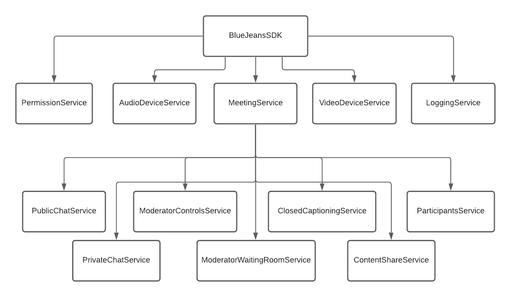
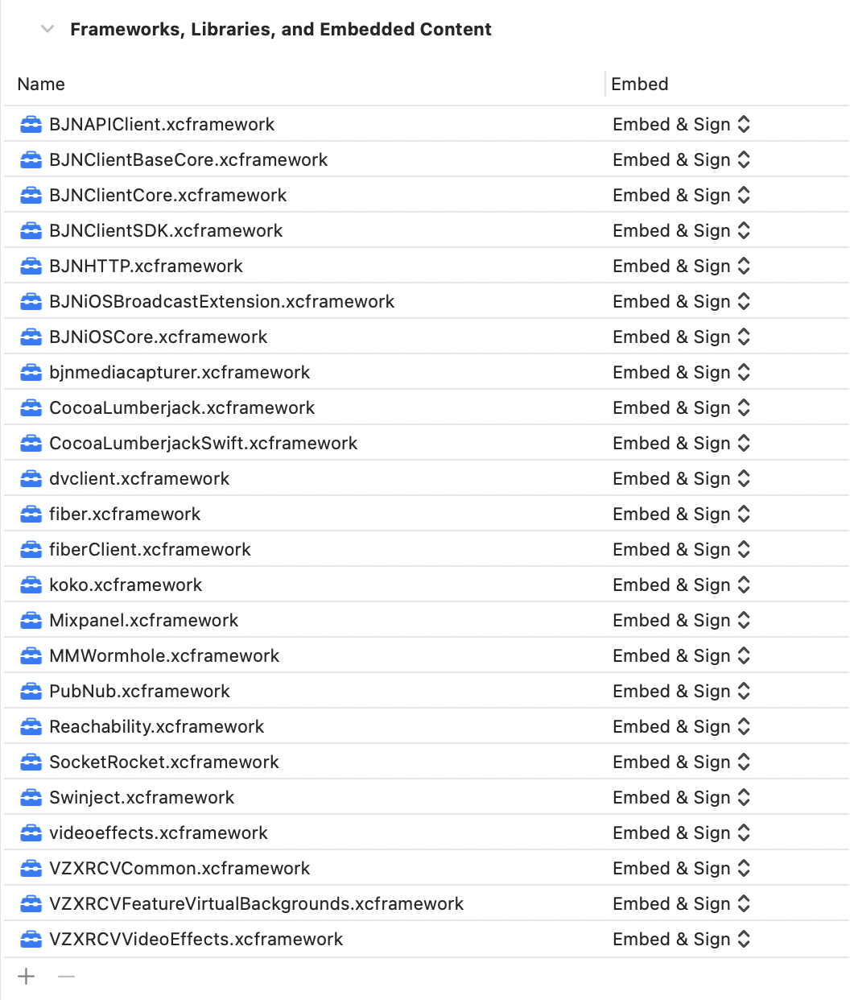
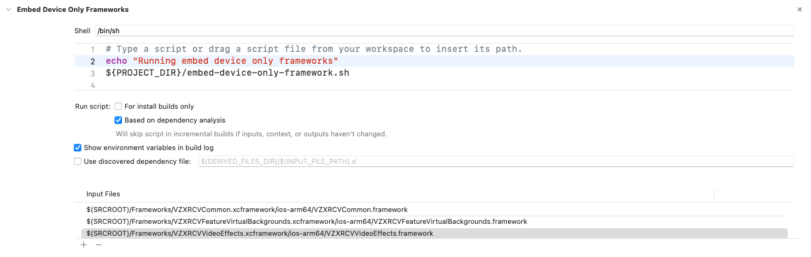
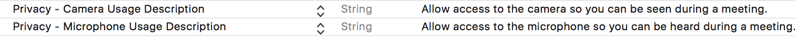
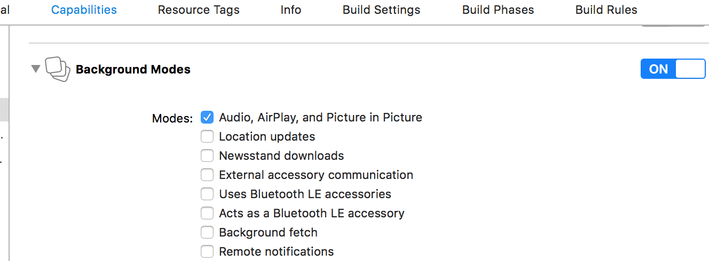

BlueJeans iOS Client Software Development Kit
The BlueJeans iOS Client Software Development Kit (SDK) enables the embedding of BlueJeans Video and Audio capabilities into iOS apps. BlueJeansSDK is a single namespace that encapsulates all the APIs related to establishing and managing a BlueJeans Video and Audio connection.
The design of the SDK emphasizes simplicity. Developers can quickly integrate BlueJeans video into their applications.
Features
- Audio and Video Permission handling
- Join, End Meeting
- Self Video
- Remote Video, Remote Video states
- Content receive
- Audio and Video self mute
- Orientation handling
- Toggle front / back camera
- Video Layout switch
- Participant list
- Participant properties: Audio mute state, Video mute state, is Self, Name and Unique Identifier
- Self Participant
- Screen Share
- Log Upload
- Multi-stream support (“Sequin” Video Layouts)
- Public and Private meeting Chat
- Remote Video and Content mute
- Meeting Information (Title, Hostname, Meeting ID)
New Features (new in 1.1.0) See CHANGELOG.md for more details.
- Closed Captioning Support
- Waiting Room Participant Support
- Waiting Room Moderation Support
- Moderator Controls
- Mute remote content and video streams
- Xcode 13.0 Support
Current Version: 1.1.0
Pre-requisites
This framework requires Swift 5.4 or Swift 5.5 and Xcode 12.5 or 13.0. Module stability will be provided in a future release.
Target deployment requires a minimum of iOS version 13.0.
All dependent frameworks are included as part of the Frameworks folder. Use the appropriate frameworks depending on your Xcode version.
API Architecture

SDK Documentation
Detailed documentation of SDK functions is available here.
How do I start?
You can experience BlueJeans meetings using the iOS client SDK by following the two steps below:
Generate a meeting ID
As a prerequisite to using the BlueJeans iOS Client SDK to join meetings, you need a BlueJeans meeting ID. If you do not have a meeting ID then you can create one using a BlueJeans account:
- Sign up for a BlueJeans Account either by opting in for a trial or a paid account
- Once the account is created, you can schedule a meeting either by using the account or through the direct API calls. To enable API calls on your account, please reach out to support team.
- Some features (such as closed captioning) are not available in every meeting. Their availability depends on the account of the meeting owner, and the enterprise they belong to. The SDK provides methods to check if these features are available (e.g.
closedCaptioningService.isClosedCaptioningAvailable). To enable a feature that is not available on your account, please contact your enterprise admin and get the feature enabled through the BlueJeans support team.
Integrate BlueJeans iOS Client SDK
Integrate the SDK using the below guidelines and use SDK APIs to join a meeting using the generated meeting ID.
Integration Steps
Steps:
- Download the xcframeworks from here:
https://swdl.bluejeans.com/bjnvideosdk/ios/1.1.0/ios-client-sdk-xcode12.ziporhttps://swdl.bluejeans.com/bjnvideosdk/ios/1.1.0/ios-client-sdk-xcode13.zipdepending on whether you are using Xcode 12.5 or 13.0. - Unzip the file and copy the
Frameworksfolder to the root folder where the Xcode project(xxxx.xcodeproj file) is located. - Open the Xcode project, click on the project settings and select the App target -> General Tab.
- Scroll to Embedded Binaries section of Xcode target.
- Select all frameworks found in
Frameworks - Drag and drop all frameworks present in the
Frameworksfolder to this section. Make sure the project settings look like the below image after adding it. Note thatBJNiOSBroadcastExtension.xcframeworkis only needed if you intend to support screen sharing.

Steps For Simulator Support
If you follow the integration steps above you will notice that you can not run your app on the iOS Simulator. The SDK does support using the simulator for debugging but there are some extra steps to get it working.
The following frameworks are not built with support for the simulator.
- VZXRCVCommon.xcframework/ios-arm64/VZXRCVCommon.framework
- VZXRCVFeatureVirtualBackgrounds.xcframework/ios-arm64/VZXRCVFeatureVirtualBackgrounds.framework
- VZXRCVVideoEffects.xcframework/ios-arm64/VZXRCVVideoEffects.framework
To work around this, follow these steps.
- Remove each of the above .xcframework’s from the Frameworks, Libraries, and Embedded Content section.
- Now the project will run on the simulator, but won’t work on a real device.
- To fix this we can add a Run Script Phase to the Build Phases for our Xcode project, which will run the included script. This script will copy and code-sign the framework only on real devices.

SPM, Carthage and Cocoapods
Other dependency managers, such as the Swift package manager, Carthage, or Cocoapods are not currently supported.
Upgrade Instructions
Whenever a newer version of SDK is available, you can consume it by replacing the xcframeworks with the newer versions.
Setup
Bitcode Support
BlueJeans iOS Client SDK cannot support bitcode. To integrate this SDK into your application, you will have to disable bitcode for the project.
To disable bitcode:
- Go to the Build Settings tab of Xcode.
- Search for “Enable Bitcode”
- Change the value to “No”
User Permissions
In iOS, the user must explicitly grant the app permission to access device cameras or microphones for video, or audio capture. Your app must provide an explanation for its use of these capture devices. Failure to do so will result in a crash.
Permissions can be requested using the BlueJeansSDK.permissionService or otherwise will be requested on joining a meeting. By default, the SDK requires both audio and video permissions to be granted or we can not join the meeting. The minimum permissions can also be changed in the PermissionService.
See also Apple’s developer documentation on audio and video capture permissions.
Open your application’s Info.plist and provide a short explanation for both of these Info.plist keys:
- NSCameraUsageDescription (Privacy - Camera Usage Description)
- NSMicrophoneUsageDescription (Privacy - Microphone Usage Description)
iOS displays this prompt when asking the user for permission, and thereafter in the Settings app. See Apple documentation for more details.

Initialize the BlueJeans SDK
The work needed to add the BlueJeans functionality into your application code is outlined here. Briefly, you will do these steps:
- Include the BlueJeans
BJNClientSDKmodule, and initialize the SDK by calling theBlueJeansSDK.initalizemethod. - Create a video view for the Self-view, add and position the remote video view controller, and if desired Content Share view.
- Make the API call to Join the BlueJeans Meeting.
- When finished, make the API call to Leave the BlueJeans Meeting.
There! That is the extent of the work you need to do to make your application join a BlueJeans meeting.
Include Module
import BJNClientSDK
Setup
As seen in the architecture diagram above, the BlueJeans iOS Client SDK is made up of “Services”. These objects provide a static interface to the state of the SDK as well as methods to operate on it.
You can retain references to these objects for your convenience. We’ll start with the MeetingService and VideoDeviceService, which will let us join/leave a meeting and get at the video streams in it.
let meetingService = BlueJeansSDK.meetingService
let videoDeviceService = BlueJeansSDK.videoDeviceService
Join a BlueJeans meeting
To connect to a Video/Audio meeting,
meetingService.join(meetingID: "your-meeting-id", passcode: "your-passcode", displayName: "John Doe") { joinResult in
if joinResult == .success {
print("Join meeting: Success")
} else {
print("Join meeting failed with result \(joinResult)")
}
}
Leave a meeting
To disconnect from the meeting,
meetingService.leave()
Adding video
Adding Remote video
BlueJeansSDK uses a system that receives multiple streams of video and audio and the client joins these together to create different layouts. This complexity is handled by the Remote Video Controller. To use this view controller, instantiate it with the code:
let remoteVideoViewController = videoDeviceService.getRemoteVideoController()
and add it to your view using view controller containment. For example:
addChild(remoteVideoViewController)
view.addSubview(remoteVideoViewController.view)
view.sendSubviewToBack(remoteVideoViewController.view)
remoteVideoViewController.didMove(toParent: self)
// Add auto-layout constraints here if desired.
Adding Self and Content Share views
The Self and Content Share views can be added as follows:
- Create a container view (e.g.
videoContainer) in Storyboard, XIB, or code. - Setup AutoLayout constraints for the
videoContainerview. - Add the self or content share view as described below.
// Select the camera to use for the self view
videoDeviceService.selectCameraDevice(.front)
guard let videoView = videoDeviceService.getSelfViewInstance() else { return }
videoContainer.addSubview(videoView)
//Set constraints programatically for top, bottom, left and right anchors
videoView.translatesAutoresizingMaskIntoConstraints = false
videoView.leftAnchor.constraint(equalTo: videoContainer.leftAnchor).isActive = true
videoView.rightAnchor.constraint(equalTo: videoContainer.rightAnchor).isActive = true
videoView.topAnchor.constraint(equalTo: videoContainer.topAnchor).isActive = true
videoView.bottomAnchor.constraint(equalTo: videoContainer.bottomAnchor).isActive = true
Similar code can be used with getContentShareInstance in place of getSelfViewVideoInstance to add it to your view hierarchy. Note that, as with the RemoteVideoViewController, the SDK does not retain a reference to these views.
Self Video View Rotation
Note that the size/aspect ratio of the self-view will change as the device is rotated. Currently, this is between 3:4 (portrait) and 4:3 (landscape) but is likely to also include 9:16 and 16:9 in future releases.
To handle these changes (and many other properties), the SDK provides observable properties that allow you to react whenever they change. In this case, you need to observe the VideoDeviceService.selfViewSize property as follows:
Swift:
videoDeviceService.selfViewSize.onChange {
print("Self view size changed to ", videoDeviceService.selfViewSize.value)
// Update self view container size
}
Content Share Size
Content Share (Screen Share) from another device can come in many different sizes and aspect ratios. You should observe the contentShareSize property and recreate your aspect ratio constraints for the container view that holds the ContentShare instance.
Logging
The iOS Client SDK will record logs. If you have experienced an issue you can upload these logs, with a comment and email for us to diagnose the issue.
let loggingService = BlueJeansSDK.loggingService // This will instantiate the logger, do this early in the lifecycle of your application.
loggingService.uploadLogs(comments: "Issue with the SDK", username: "abc@yourcompany.com") { uploadResult in
print("Log Upload Finished")
}
BlueJeansSDK uses CocoaLumberjack and will respect log levels set at the app level.
Exploring the SDK
The SDK is made up of several services. These fall into two main categories, in-meeting, and out-of-meeting. While they can be accessed at any time, in-meeting services will return nil or default values when a meeting is not active. In-meeting services are all accessed from the MeetingService.
Here we will cover each service at a high level, for more detail check the detailed docs here.
MeetingService
This service takes care of all meeting-related APIs. It also provides access to the in-meeting services - ContentShareService, PublicChatService, and PrivateChatService.
The meeting service provides methods to join and leave meetings, change video layout, mute local audio/video. Observable properties include meeting state, video layout, local mute, a list of active participants, and recording status.
Video Layouts
Represents how remote participants videos are composed:
- Speaker : Only the most recent speaker is shown, taking up the whole video stream.
- People : The most recent speaker is shown as a larger video. A filmstrip of the next (up to) 5 most recent speakers is also seen.
- Gallery : A collection of the most recent speakers is shown, arranged in a grid layout of equal sizes.
videoLayout reflects the current video layout, while setVideoLayout(to layout: VideoLayout) can be used to set a layout of your choice.
Note that by default layout will be set by the meeting scheduler in their account’s meeting settings.
Configuring 5x5 in gallery layout
BlueJeansSDK.initialize(...) provides a parameter to turn on 5x5 gallery layouts - the default will be 3x3. 5x5 works well on most iOS devices that support iOS 13 or higher, but developers may want to consider limiting 5x5 on older devices if needed.
AudioDeviceService
Provides a method to get a UIView for selecting an audio device. Currently, this will return a standard iOS audio picker. BlueJeans will respect all normal changes in input/output audio devices - for example, plugging in headphones or connecting to a Bluetooth device.
VideoDeviceService
The VideoDeviceService provides views for the self-view, remote endpoints, and any content that is being received currently. It also exposes methods/properties related to these, for example selecting a camera or the current size of received self or content share video.
ContentShareService
Screen sharing on iOS involves creating an app extension that can capture the entire screen - even when your app is in the background. This is covered in detail in here.
The ContentShareService provides methods for starting and stopping screen sharing as well as observable properties to know if screen sharing is available (for example it may be restricted in the meeting settings), and the current status of screen sharing.
PublicChatService and PrivateChatService
The SDK provides a facility to chat within the meeting with participants present in the meeting. The chat will remain for the duration of the meeting and will be cleared once the meeting is over.
As the names suggest, the Public and Private chat services provide access to send and receive messages either directly to an individual or to share with all participants in the meeting.
LoggingService
This has already been briefly covered above. The desired logging level can be set and logs can be uploaded to BlueJeans.
PermissionService
By default, the SDK will ask for microphone/camera permission at the last possible moment - when joining a meeting for the first time. It will use the strings specified in your app’s Info.plist when requesting permission (see above).
The PermissionService provides methods and states to allow more fine-grained control over how and when permission is asked for.
ModeratorControlsService
When you join a BlueJeans meeting with a moderator passcode, various extra controls are available. For example, to mute the other participants in the meeting, or to start or stop recording.
The ModeratorControlsService provides the ability to check if an SDK user has joined with moderator privileges, and functions to perform moderator-specific actions.
ModeratorWaitingRoomService
BlueJeans meetings can optionally include the “Waiting Room” feature, which allows users who join with a participant passcode to first be placed into a waiting room state, from here a moderator can individually admit them into the meeting - after which they will join automatically.
The ModeratorWaitingRoomService provides functions and properties to see who has joined the waiting room, admit or deny those in the waiting room, or demote someone from the meeting back into the waiting room. It also provides functions to toggle the waiting room function on or off in a meeting and check if the meeting supports the ‘Waiting Room’ feature.
ClosedCaptioningService
The BlueJeans meeting platform supports automatically generated closed captioning for meetings.
The ClosedCaptioningService provides functions and properties to check if automatic captions are available for the current meeting, to start and stop the captions on the client, and the captions themselves.
SDK Sample Applications
We have bundled two sample apps in this repo.
- Hello BlueJeans provides a bare-bones example to get you into a meeting and sending/receiving audio and video.
- Screen Share, as the name suggests, guides you through the process of setting up your app and an app extension to enable screen sharing.
Important Notes
Background Modes
If you need to support Audio after the app moves to the background, you need to enable Background Modes -> Audio capability.
- Open Xcode project settings
- Go to Capabilities tab(next to General tab)
- Scroll down to Background Modes section.
- Toggle the switch to ON position for Background Modes.
- Select checkbox with title Audio, AirPlay, and Picture in Picture.

Note: Without this, if you join a meeting -> background the app -> foreground it after some time, the audio will be lost and it will show an error in console as "Audio, Airplay and Picture in Picture" background mode missing from app capabilities.
Video support in Background
Note that the iOS Client SDK does not support Video in Background mode. An app needs to be in the foreground to use the Video capability. Once the app is backgrounded, video streaming will be paused until the user foregrounds the app.
iOS Simulators
Video/Audio capability of BlueJeansSDK would only work in an iOS Device since iOS Simulator cannot support Camera/Microphone. Hence you may not be able to use iOS Simulators for integrating and testing all SDK features. Features that do not rely on audio/video should work but are not officially supported.
Video Resolutions and BW consumption
- Video receive resolution and BW max:
| Layout | Max participants | Layout pattern for max participants | Video Receive max resolution, FPS | Video Receive BW max |
|---|---|---|---|---|
| Speaker View | 1 | 1 | 640x360/640x480 30fps | 600 kbps |
| People View | 6 | 1 (main stage) + 5 (film strip) | main stage 640x360/640x480 30fps (if single participant) | 600 kbps |
| main stage 320x180/240x180 30fps (if > 1 participant) | 300 kbps | |||
| film strip 160x90/120x90, 15fps | 400 kbps | |||
| Gallery View | 9 | 3x3 (landscape) / 4x2+1 (portrait) | 640x360/640x480 (participants < 2) 30 fps | 1200 kbps |
| 320x180/240x180 (participants > 2, < 4) 30 fps | 1200 kbps | |||
| 160x90/120x90 (participants > 4) 15 fps | 900 kbps | |||
| 160x90/120x90 (participants > 9) 15 fps | 1700 kbps |
- Content receive resolution and BW max: 1920x1080 at 5 fps, 300 kbps
- Video send resolution and BW max: 640x480 at 30fps, 900 kbps
Note: Endpoints that send video in an aspect ratio of 4:3 instead of 16:9, will result in the video received at a resolution of 640x480 in place of 640x360, 240x180 in place of 320x180, and 120x90 in place of 160x90. Mobile endpoints / BlueJeans iOS SDK endpoints send video at 640x480 i.e at an aspect ratio of 4:3.
Tracking & Analytics
BlueJeans collects data from app clients who integrate with SDK to join BlueJeans meetings like device information (ID, OS, etc.), coarse location (based on IP address), and usage data.
Contributing
The BlueJeans iOS Client SDK is closed source and proprietary. As a result, we cannot accept pull requests. However, we enthusiastically welcome feedback on how to make our SDK better. If you think you have found a bug, or have an improvement or feature request, please file a GitHub issue and we will get back to you. Thanks in advance for your help!
License
Copyright © 2021 BlueJeans Network. All usage of the SDK is subject to the Developer Agreement that can be found here. Download the agreement and send an email to api-sdk@bluejeans.com with a signed version of this agreement. Before any commercial or public facing usage of this SDK.
Legal Requirements
Use of this SDK is subject to our Terms & Conditions and Privacy Policy.